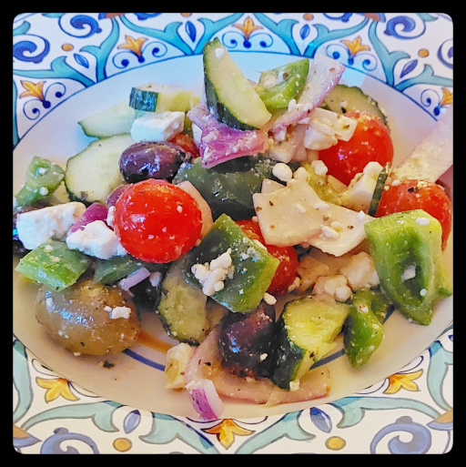

Mediterranean Salad
It's not only Greece where you find this salad.

grape or cherry tomatoes
cucumber
bell pepper
purple onion
olives
feta cheese
olive oil
red wine vinegar
garlic
oregano
salt
pepper
Cut cucumber and bell peppers in big chunks.
Go easy on the purple onions.
Pitted olives make it easier to eat.
Leave the grape tomatoes whole.
Crumble in some feta.
Dressing: 3 tbsp olive oil, 1 tbsp red wine vinegar, crushed garlic clove, oregano, salt, and pepper.